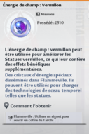
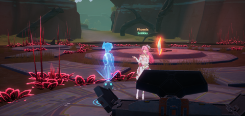

Guide
Vous pouvez faire clique droit sur l'image, puis ouvrir l'image, pour l'agrandir.
Chose à faire quotidiennement.
• Dons d'équipe.
1 fois par jour.
• Missions de prime.
4 par jour.
Si vous avez accès au Domaine 9, faites les missions la bas. Et si vous êtes au début du jeu alors faites les missions sur Aesperia

• Cuisine de Mi-a.
3 fois par jour.
A chaque plat vous aurez un buff, celui-ci est aléatoire. Vous aurez de l'attaque élémentaire en + ou bien de la résistance.
Vous aurez également de l'xp, de l'or et des matériaux.

• La vitalité.
En fonction de votre level, je vous conseille la chose suivante:
• En dessous du lvl 80: Dépenser votre vitalité dans l'épreuve dimensionnelles afin de farm les matériaux pour monter vos armes/monter
vos matrices.
• Au dessus du lvl 80: Dépenser votre vitalité dans les opération conjointe pour farm votre équipement.
(N'oubliez pas d'utiliser vos puce de fournitures conjointes afin de drop plus facilement du stuff en or).


• Recherche désignée.
Chaque jour vous obtenez 5 activateurs d'énergie, il faudra donc l'énergie avant d'attendre le stockage maximum qui est de 20.
Cela vous permettra d'obtenir certaines ressources.

• Les peluches pour augmenter le trait du simulacre.
Il y'a plusieurs emplacements pour obtenir des peluches.
• L'île de Cetus: 3 fois par jour.


Il faudra attrapez la peluche rose/blanc (car elle le maximum de points pour les simulacres).

• Marché noir: 1 fois par jour.
Il faudra choisir une boîte et vous obtiendrez une peluche.

• Entraînement.
2 fois par jour.
Cela vous permettra d'acheter des choses dans la boutique.


• L'île artificielle.
Récolter chaque jour les matériaux avec le petit cadeau.
Chose à faire hebdomadairement.
• Raid.
• Conflit Frontalier.
3 fois par semaine (mardi, jeudi, samedi).
Pour obtenir de l'équipement.
• Faille du néant.
3 fois par semaine (lundi, mercredi, vendredi).
Pour obtenir des preuves d'achats (et des matrices).
• Mission d'équipe.
Pour obtenir des points de mérite et supporter l'équipe, soit 4 missions par semaine.
Par la suite avec les points vous pouvez acheter des ressources dans la boutique.
• Farm d'énergie de champ.
Permet d'améliorer les statues du domaine 9.

• Quêtes de la police.
4 fois par semaine.
Cela vous apportera des miras et vérons.
Chose à faire mensuellement.
• Fantasme séquentiel.
• L'origine de la guerre.
• L'abîme du néant.
• Le PVP.
Pour gagner des dark cristaux.
Autres
• Vortex.
Reset tout les 14 jours, permet d'avoir des matériaux pour le stuff.
• Les mini-jeux.
8 fois par jour, soit 1 essai par mini-jeux
Cela vous apportera des miras et vérons.
• Les montures.
Pour obtenir des dark cristaux.
• Les recettes de cuisine.
Pour obtenir des dark cristaux.
• Les recettes de cuisine.
Voici ce que vous devez acheter chaque semaine.

• Les rêves de Claire.
3 fois par semaine

Phoenix © 2023